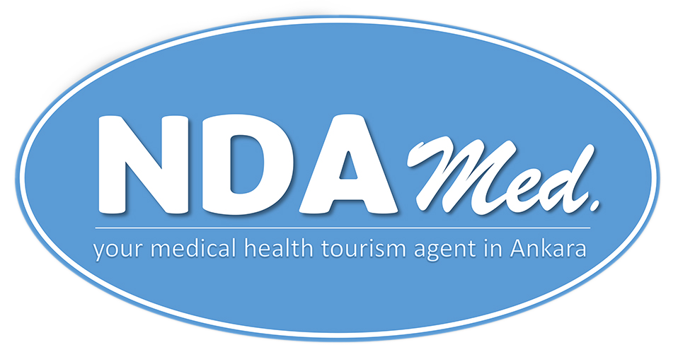

Sağlıklı hizmet almak sizin de hakkınız. Hizmet sonrası irtibatta kalıp süreci birlikte değerlendiriyoruz.
2024 yılında Ankara'da kurulmuş küçük bir aile şirketiyiz. Ankara'nın bir çok açıdan sağlık turizmi sektörüne sunabilecek büyük katkısı olduğunu düşünüyoruz ve bu yolda ilerliyoruz. Sahip olduğumuz sosyal ağımızı yurtiçi ve yurtdışından bizi tercih eden misafirlerle buluşturmak istiyoruz. Doğru hastane, iyi otel ve başarılı transfer hizmeti sunuyoruz. Sadece bir sağlık turizm acentesi olarak değil, misafirlerimizin şehirde kendilerini rahat hissetmeleri için onlara aynı zamanda bir asistanlık hizmeti veriyoruz.Bizi diğer acentelerden farklı kılan şey, kendi sağlığımız söz konusu olduğunda iyi sağlık hizmeti almak istediğimiz zaman ne yapıyorsak, misafirlerimize de aynı şekilde davranıyoruz.
NDA Med International Society for Quality in Health Care (ISqua) üyesidir. ISqua'nın kısaca hedefleri ise eğitim, bilgi paylaşımı, denetim, dünya çapındaki sağlık sistemlerini desteklemek ve benzer düşünen insanları sağlık ağlarımız aracılığıyla buluşturmaktır. NDA Med olarak ISqua'nın sunduğu hizmetler doğtultusunda ilerliyoruz ve tüm bilgilendirmelerini destekliyoruz. Ülkemizde sadece uluslararası sağlık turizm sertifikasına sahip olan hastane ve kliniklerle çalışıyoruz. Ayrıca, sunulan eğitimlere katılarak hem yurtiçinde hem yurtdışında bulunan ve bizi tercih tüm hastalar için en en güncel bilgiyi en doğru kaynaktan edinmiş oluyoruz.
Gitmeniz gereken yerlere ulaşmanıza yardımcı oluyoruz.
Anlaşmalı otellerimizde konaklama hizmeti sunuyoruz.
İngilizce dahil birçok dilde çeviri hizmeti sunuyoruz.
Saat farketmeksizin size şehrin her yerinde eşlik ediyoruz.
Talebinize uygun bir hastane veya uzman tedariği sağlıyoruz.
KVKK metni – NDA Med.
KİŞİSEL VERİLERİN KORUNMASI VE GİZLİLİK POLİTİKASI
Web Sitesi Gizlilik Sözleşmesi
Bu web sitesini ziyaret etmeniz ve bu site vasıtasıyla sunduğumuz hizmetlerden yararlanmanız sırasında, size ve talep ettiğiniz hizmetlere ilişkin olarak elde ettiğimiz bilgilerin ne şekilde kullanılacağı ve korunacağı, işbu "Gizlilik Politikası"nda belirtilen şartlara tabidir. Bu web sitesini ziyaret etmekle ve bu site vasıtasıyla sunduğumuz hizmetlerden yararlanmayı talep etmekle işbu "Gizlilik Politikası"nda belirtilen şartları kabul etmektesiniz.
Bugüne kadar NDA MED. olarak uğraştığımız işlerin hassasiyeti gereğince müşterilerimizden ya da müşteri adaylarımızdan gelen veriler gizli tutulmuş ve hiçbir zaman üçüncü kişilerle paylaşılmamıştır. Kişisel verilerin korunması, şirketimizin temel politikasıdır. Herhangi bir yasal düzenleme olmadan önce de şirket ve iştiraklerimiz, kişisel verilerin gizliliğine büyük önem vermiş ve bunu bir çalışma ilkesi olarak benimsemiş ve çalışanlarına da bu ilke doğrultusunda çalışma talimatlarını vermiştir. Kişisel Verilerin Korunması Kanunu’nun getirdiği bütün sorumluluklara uymayı da NDA MED. olarak taahhüt etmekteyiz. Şirketimizin kişisel verilerin korunmasına ilişkin prensipleri, iştiraklerimizi de kapsamaktadır.
Şirketimiz tarafından hazırlanan bu Politika, 6698 sayılı Kişisel Verilerin Korunması Kanunu’na (“KVKK”) uygun olarak hazırlanmıştır. Sizlerden rızanızla ya da Kanunda sayılan diğer hukuka uygunluk gereği elde edilmiş veriler, sunmuş olduğumuz hizmetlerin daha kaliteli hale getirilmesi, sizlere sunulan hizmetlerin ve kalite politikamızın iyileştirilmesi amacıyla kullanılacaktır. NDA MED. Kişisel Verilerin Korunması ve İşlenmesi Politikası, müşterilerimizin, müşteri adaylarımızın, çalışanlarımız ile bizimle çözüm ortaklığı içinde çalışan şirketlerin müşterileri ve çalışanlarının ya da diğer kişilerin otomatik olarak elde edilen verilerinin korunmasını amaçlar ve bunlara ilişkin düzenlemeleri içerir. Şirketimiz, politikamızı ve Yönetmeliğimizi -Kanuna uygun olmak ve kişisel verilerin daha iyi korunması şartı ile- değiştirme hakkına sahiptir.
a) Hukuka ve dürüstlük kurallarına uygun olma: NDA MED., topladığı ya da kendisine diğer şirketlerden gelen verilerin kaynağını sorgular ve bunların hukuka uygun ve dürüstlük kuralları çerçevesinde elde edilmesine önem verir. Bu çerçevede NDA MED.’in sunduğu hizmetleri satan üçüncü taraflara (acentelerin ve diğer aracı kurumların da) kişisel verilere korunması amacıyla gerekli uyarı ve bildirimleri yapar.
b) Doğru ve gerektiğinde güncel olma: NDA MED., firma bünyesinde bulunan bütün verilerin doğru bilgi olmasına, yanlış bilgi içermemesine ve nihayet kişisel verilerde değişiklik olduğu takdirde bunları kendisine iletildiği takdirde güncellemeye önem verir.
c) Belirli, açık ve meşru amaçlar için işlenme: NDA MED., ancak sunduğu ve hizmet sırasında kişilerden onayını aldığı amaçlarla sınırlı şekilde verileri işler. İş amacı dışında verileri işlemez, kullanmaz ve kullandırtmaz.
d) İşlendikleri amaçla bağlantılı, sınırlı ve ölçülü olma: NDA MED., sadece verileri işlendikleri amaçla sınırlı ve hizmetin gerektirdiği ölçüde kullanır.
e) İlgili mevzuatta öngörülen veya işlendikleri amaç için gerekli olan süre kadar muhafaza edilme: NDA MED., sözleşmeler kaynaklı verileri Kanunun ihtilaf çıkma süreleri, ticaret ve vergi hukukunun gereklilikleri kadar bünyesinde muhafaza eder. Buna karşın bu amaçlar ortadan kalktığında veriyi siler ya da anonimleştirir.
Önemle belirtelim ki, NDA MED., verileri ister rıza isterse kanuna uygun bir şekilde toplamış ya da işlemiş olsun yine de yukarıda sıraladığımız bu ilkeler geçerlidir.
Kişisel Verileri Koruma Kanunu madde 11’e göre aşağıda sayılan haklarınız bulunmaktadır. Bu haklarınızı kolaylaştırmak için sizler için ayrıca bir başvuru formu da NDA MED. tarafından hazırlanmıştır.
Kişisel verileri işlenen kişiler, NDA MED. tarafından web sayfamızda duyurulan ilgilimize başvurarak kendi verisi ile ilgili olarak;
a) Kişisel verinizin işlenip işlenmediğini öğrenme,
b) Kişisel verileri işlenmişse buna ilişkin bilgi talep etme,
c) Kişisel verilerin işlenme amacını ve bunların amacına uygun kullanılıp kullanılmadığını öğrenme,
ç) Yurt içinde veya yurt dışında kişisel verilerin aktarıldığı üçüncü kişileri bilme,
d) Kişisel verilerin eksik veya yanlış işlenmiş olması hâlinde bunların düzeltilmesini isteme,
d) ve e) bentleri uyarınca yapılan işlemlerin, kişisel verilerin aktarıldığı üçüncü kişilere
e) Kanunda öngörülen şartlar çerçevesinde kişisel verilerin silinmesini veya yok edilmesini isteme,
bildirilmesini isteme,g) İşlenen verilerin münhasıran otomatik sistemler vasıtasıyla analiz edilmesi suretiyle kişinin kendisi
aleyhine bir sonucun ortaya çıkmasına itiraz etme,ğ) Kişisel verilerin kanuna aykırı olarak işlenmesi sebebiyle zarara uğraması hâlinde zararın giderilmesini talep etme,
haklarına sahiptir. NDA MED. olarak bu haklara saygılıyız.
Azami tasarruf ilkesi ya da cimrilik ilkesi adı verilen bu ilkemize göre NDA MED.’ye ulaşan veriler, ancak gerekli olduğu kadar sisteme işlenir. Bu nedenle hangi verileri toplayacağımız amaca göre belirlenir. Gerekli olmayan veriler toplanmaz. Şirketimize intikal eden diğer veriler de aynı şekilde şirket bilişim sistemlerine aktarılır. Fazlalık bilgiler, sisteme kaydedilmez, silinir ya da anonim hale getirilir. Bu veriler, istatistiki amaçlarla kullanılabilir. Özel nitelikli verilerden sağlık verileri sadece müşterilere daha iyi hizmet vermek ve onların sağlığını korumak amacıyla alınır, yine aynı amaçla sınırlı olmak üzere müşterinin tercih ettiği hizmetin türüne göre yurt içi veya yurt dışında mukim otel, hava yolu ve transfer hizmeti sağlayan tedarikçi firmalar ile ilgili yurt dışı acentesine aktarılır ve sistemde özenle tutulur.
Kanunen saklanması gereken sürelerin dolması, yargı süreçlerinin tamamlanması ya da diğer gereklilikler ortadan kalktığında şirketimiz tarafından bu veriler kendiliğinden ya da ilgili kişinin talebi üzerine kişisel veriler silinir, yok edilir ya da anonim hale getirilir.
NDA MED. bünyesinde bulunan veriler, kural olarak ilgili kişilerin beyanı üzerine beyan ettiği şekilde işlenir. NDA MED., müşteriler ya da NDA MED. ile temas kuran kişilerin beyan ettiği verilerin doğruluğunu araştırmak zorunda olmadığı gibi bu hukuken ve çalışma ilkelerimiz nedeniyle de yapılmaz. Beyan edilen veriler, doğru kabul edilir. Kişisel verilerin doğruluğu ve güncelliği ilkesi NDA MED. tarafından da benimsenmiştir. Şirketimizin kendisine ulaşan resmî belgelerden veya ilgilisinin talebi üzerine işlemiş olduğu kişisel verileri günceller. Bunun için gerekli önlemleri alır.
Kişisel veriler gizlidir ve NDA MED. de bu gizliliğe riayet etmektedir. Kişisel verilere şirket içinde ancak yetki verilmiş kişiler ulaşabilir. NDA MED. tarafından toplanan kişisel verilerin korunması ve yetkisiz kişilerin eline geçmemesi ve müşterilerimizin ve müşteri adaylarımızın mağdur olmaması için gerekli teknik ve idari bütün tedbirler alınmaktadır. Bu çerçevede yazılımların standartlara uygun olması, üçüncü partilerin özenle seçilmesi ve şirket içinde de veri koruma politikasına riayet edilmesi sağlanmaktadır.
NDA MED.’in kişisel verileri toplanması ve işlenmesi aydınlatma metninde belirtilen amaçlar doğrultusunda icra edilecektir. Veriler, sözleşmenin kurulması ve müşterilere daha iyi hizmet sağlanması amacıyla toplanmakta ve işlenmektedir.
Müşterilerimiz ve muhtemel müşterilerimizle bir sözleşme ilişkisi kurulmuş ise, toplanmış olan kişisel veriler, müşterinin onayı alınmaksızın kullanılabilir. Ancak bu kullanım, sözleşme amacı doğrultusunda gerçekleşir. Sözleşmenin daha iyi icrası ve hizmetin gereklilikleri ölçüsünde veriler kullanılır ve gerektiğinde müşterilerle irtibata geçilerek güncellenir. Buna karşın müşteri adaylarımızın (muhtemel müşteri) bize kendileri tarafından bırakmış olduğu veriler, onlara sonrasında daha kolay ve kaliteli hizmet sunmak için işlenir. Bu veriler talepleri halinde bir sözleşme ilişkisine dönüşmemişse silinir.
NDA MED., gerek iş gerekse çözüm ortakları ile veri paylaşımı yaparken hukuka uygun davranmayı ilke edinir. İş ve çözüm ortakları ile veri gizliliği taahhüdü ile ve ancak hizmetin gerektirdiği kadar veri paylaşılmakta ve bu taraflardan mutlaka veri güvenliğinin alınmasına ilişkin tedbirleri almaya zorlanmaktadır.
Kişisel veriler, işlemenin ilgili mevzuatta açıkça belirtilmesi veya mevzuatla belirlenen bir hukuki yükümlülüğün yerine getirilmesi amacıyla ayrıca onay alınmadan işlenebilir. Veri işlemlerinin tür ve kapsamı, yasal olarak izin verilen veri işleme faaliyeti için gerekli olmalı ve ilgili yasal hükümlere uygun olmalıdır.
Şirketin sunduğu hizmet ve meşru amaçları doğrultusunda kişisel veriler işlenebilir. Ancak veriler hiçbir şekilde hukuka aykırı hizmetler için kullanılamaz.
Kanun’a göre Kişilerin ırkı, etnik kökeni, siyasi düşüncesi, felsefi inancı, dini, mezhebi veya diğer inançları, kılık ve kıyafeti, dernek, vakıf ya da sendika üyeliği, sağlığı, cinsel hayatı, ceza mahkûmiyeti ve güvenlik tedbirleriyle ilgili verileri ile biyometrik ve genetik verileri özel nitelikli kişisel veridir. NDA MED. ayrıca, özel nitelikli kişisel verilerin işlenmesinde, ayrıca Kurul tarafından belirlenen yeterli önlemleri alır.
NDA MED., hizmetlerin daha iyi verilebilmesi için kişilerin onayı ile özel nitelikli verileri ancak toplandıkları amaç için işleyebilir. Aracılığımızla rezervasyon yaptırdığınız tesis, Covid-19 kapsamında çıkan genelge ve yasal düzenlemeler gereği misafirlerden, kendilerine ve yakınlarına ait sağlık verileri gibi özel nitelikli kişisel veriler de dahil olmak üzere bazı kişisel veriler talep edebilir. Bu kişisel veriler, gerektiğinde resmi merciler ve sağlık kuruluşları ile paylaşılabilir.
Otomatik sistemler aracılığı ile işlenen veriler konusunda NDA MED., Kanuna uygun davranır. Kişilerin açık rızası olmaksızın bu verilerden elde edilen bilgiler kişi aleyhine kullanılamaz. Ancak NDA MED., kendi sistemindeki verileri kullanarak işlem yapacağı kişilerle ilgili kararlar alabilir.